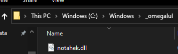
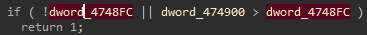

# VAC
Valve Anti-Cheat.
The anticheat isn't great. It mostly works with signature detection.
If you're using public code, you cheat will be detected.
If it's coded yourself, it'll probably stay undetected.
Links•
https://guidedhacking.com/threads/how-to-bypass-vac-valve-anti-cheat-info.8125•
https://github.com/danielkrupinski/VAC-BypassBypasses include:• Mid-function hooking (apparently they detect hooks on some functions)
## Blocking LoadLibraryA
As of 2020, Valve implemented some new injection prevention techinques
which blocks a basic LoadLibrary inject.
If you still want to use LoadLibrary, then there are bypasses to get it to work.
Otherwise you can just manual map / any other DLL injection technique.
Info:
•
https://github.com/hinnie123/csgo-load-library-bypass-injector - C++ injection source
•
https://github.com/danielkrupinski/OneByteLdr - Python patch
•
https://www.unknowncheats.me/forum/counterstrike-global-offensive/404112-loadlibrary-prevention-mechanism-byte-patch.htmlThey hook NtOpenFile and verify if the module being loaded is a DLL.
If it's a DLL, they check if it's a trusted module.
### Bypass Trusted Module Protection
#### Unhook NtOpenFile
You could unhook NtOpenFile within Ntdll.dll in CSGO, inject your DLL using LoadLibrary,
and then restore the hooked bytes after injection has finished.
#### Place in your DLL in a C:\Windows subfolder
Documented here:
https://www.unknowncheats.me/forum/counterstrike-global-offensive/406285-bypassing-valves-trusted-mode.html#### Modify dword_474900 to 5 and restore after injection
Documented here:
https://github.com/hinnie123/csgo-load-library-bypass-injectorThe hook in NtOpenFile calls
sub_40D460sub_40D460 is basically an
IsTrustedModule function, which returns TRUE if the module is trusted.
At the end is a check:
If
dword_4748FC is
0 or
dword_474900 is higher than
dword_4748FC,
the function will TRUE - it's a trusted module.
Modify either
dword_4748FC or
dword_4748FC, inject, and restore after injection.
#### Manual Map
You could also just manual map
{kind=link}